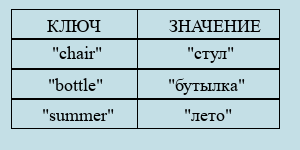
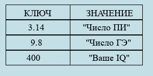
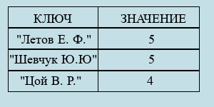
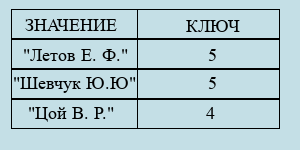

Ассоциативный массив
Ассоциативный массив — структура данных, где каждому элементу соответствует свой ключ, по которому можно получить этот элемент.
Типичный пример ассоциативного массива — обыкновенный словарь:
Естественно, ключи и значения могут быть любого типа, который относится к базовым: логического, целочисленного, символьного/строкового, вещественного. Вот ещё один пример:
Важно понимать, что одинаковых ключей быть не может: значение будет перезаписываться. А вот одинаковых значений может быть сколько угодно:
Такое возможно:
А такое — нет:
В целом, в реализации ассоциативного массива "в лоб" нет ничего сложного. Конечно, его можно написать, используя хеш-функции, но эта тема явно не для средней школы. Поэтому мы обойдёмся двумя статическими (динамические в средней школе, увы, не проходят) массивами: keys — массив ключей и vals — массив значений; также нам понадобится переменная n, отвечающая за длину словаря. В языке Python вместо неё мы будем использовать функцию len, чтобы избежать проблем с передачей целого числа по ссылке. Всё будет несколько примитивно, зато понятно — и написать и использовать вы сможете сами!
Итак, давайте определим минимальный набор функций, обрабатывающих словарь:
- Задать значение по ключу
- Удалить элемент
- Узнать, существует ли элемент
- Очистить ассоциативный массив
- Получить значение по ключу
В данном примере мы будем реализовывать словарь где:
- Ключ — строковая переменная;
- Значение — целочисленная переменная;
Мы имеем два массива keys — массив ключей и vals — массив значений, которые связаны индексами: под ключом keys[i] хранится значение vals[i].
Задать значение по ключу
Логика работы следующая: если ключ key существует, то надо поменять значение value, которое к нему привязано. Если ключа ещё нет — создать ключ key и привязать к нему значение value.
C++
void set(std::string *keys, int *vals, int &n, std::string key, int value)
{
//Надо пройти по всем элементам ассоциативного массива
for (int i = 0; i < n; ++i)
if (keys[i] == key)
{
//Если ключ существует
vals[i] = value;
return;
};
//Если ключа не существует
vals[n] = value;
keys[n] = key;
//Надо не забыть увеличить размер ассоциативного массива
n += 1;
};
Pascal
procedure set(var keys : array [0..MAX_LEN] of string, var vals : array [0..MAX_LEN] of integer,
var n : integer, key : string, value : integer);
begin
{Надо пройти по всем элементам ассоциативного массива}
for i := 0 to n - 1 do
if (keys[i] = key) then
begin
{Если ключ существует}
vals[i] := value;
exit(0);
end;
{Если ключа не существует}
vals[n] := value;
keys[n] := key;
{Надо не забыть увеличить размер ассоциативного массива}
n := n + 1;
end;
Python
#название set является ключевым словом языка
def _set_(keys, vals, key, value):
#Надо пройти по всем элементам ассоциативного массива
for i in range(len(keys)):
if keys[i] == key:
#Если ключ существует
vals[i] = value
return 0
#Если ключа не существует
vals.append(value)
keys.append(key)
#Так как длина массивов всегда одинакова, оба значения стоят на последнем месте.
#Следовательно, всегда будут соответствовать друг другу: по keys[i] можно получить
#vals[i].
Удалить элемент
О принципе удаления элементов из массива вы можете прочитать в соответствующей статье:
Удаление элемента из массиваC++
void rem(std::string *keys, int *vals, int &n, std::string key)
{
//Проходим по всем элементам ассоциативного массива
for (int i = 0; i < n; ++i)
if (keys[i] == key)
{
//Когда находим удаляемый ключ
int tmp1 = vals[i];
vals[i] = vals[n - 1];
vals[n - 1] = tmp1;
//Меняем местами vals[i] и vals[n-1]
std::string tmp2 = keys[i];
keys[i] = keys[n - 1];
keys[n - 1] = tmp2;
//Меняем местами keys[i] и keys[n-1]
//И не забываем уменьшить длину ассоциативного массива:
n -= 1;
return;
};
};
Pascal
procedure rem(var keys : array [0..MAX_LEN] of string,
var vals : array [0..MAX_LEN] of integer, var n : integer, key : string);
var
{Эти переменные нужны для совершения обмена местами двух переменных}
tmp1 : integer;
tmp2 : string;
begin
{Проходим по всем элементам ассоциативного массива}
for i := 0 to n - 1 do
if (keys[i] = key) then
begin
{Когда находим удаляемый ключ}
tmp1 := vals[i];
vals[i] := vals[n - 1];
vals[n - 1] := tmp1;
{Меняем местами vals[i] и vals[n-1]}
tmp2 := keys[i];
keys[i] := keys[n - 1];
keys[n - 1] := tmp2;
{Меняем местами keys[i] и keys[n-1]}
{И не забываем уменьшить длину ассоциативного массива:}
n := n - 1;
exit(0);
end;
end;
Эта функция проще всего реализуется на языке Python:
Python
def(keys, vals, key):
#Проходим по всем элементам ассоциативного массива
for i in range(len(keys)):
if (keys[i] == key):
#Когда находим удаляемый ключ
keys.pop(i)
vals.pop(i)
#Собственно, удаляем его встроенным методом массива.
Узнать, существует ли ключ
Надо пройти по ассоциативному массиву, сравнивая все ключи с искомым key. Совпадают — вернуть истину. Если по выходе из массива функция ещё не вернула истину, то такой ключ в массиве отсутствует. Следовательно, надо вернуть ложь.
C++
bool exist(std::string *keys, int n, std::string key)
{
for (int i = 0; i < n; ++i)
if (keys[i] == key)
return true;
return false;
};
Pascal
procedure exist(var keys : array [0..MAX_LEN] of string, n : integer, key : string) : boolean;
begin
for i := 0 to n - 1 do
if (keys[i] = key) then
exist := true;
exist := false;
end;
Python
def exist(keys, key):
for i in keys:
if i == key:
return True
return False
Очистить ассоциативный массив
Тут всё просто. Надо установить длину массива в ноль.
C++
void clear(int &n)
{
n = 0;
};
Pascal
function clear(var n : integer);
begin
n := 0;
end;
В Python, так как в нём есть определённые сложности с изменением целочисленной переменной изнутри функции, мы просто очищаем оба массива:
Python
def clear(vals, keys):
vals.clear()
keys.clear()
Получить значение по ключу
Надо пройти по массиву ключей. Если встретится совпадающий с искомым key, то надо вернуть значение под этим ключом. Если по выходе из цикла по массиву функция ещё не завершилась, то, очевидно, такого ключа не существует. В этом случае вы реализуем аварийный выход.
C++
int get(std::string *keys, int *vals, int n, std::string key)
{
for (int i = 0; i < n; ++i)
if (keys[i] == key)
return vals[i];
//Если ключ не был найден, то аварийно завершим функцию.
exit(1);
};
Pascal
function get(var keys : array [0..MAX_LEN] of string,
var vals : array [0..MAX_LEN] of integer, n : integer, key : string) : integer;
begin
for i := 0 to n - 1 do
if (keys[i] = key) then
get := vals[i];
{Если ключ не был найден, то аварийно завершим функцию.}
exit(1);
end;
Python
def get(keys, vals, key):
for i in range(len(keys)):
if (keys[i] == key):
return vals[i]
#Если ключ не был найден, то аварийно завершим функцию.
raise ValueError('Ключ не найден!')
};
Пример использования
C++
//Очистка ассоциативного массива
clear(n);
//Добавление нескольких пар "ключ-значение"
set(keys, vals, n, "Ivan", 213);
set(keys, vals, n, "Anton", 21);
set(keys, vals, n, "Egor", 321);
//Замена значения для одного из ключей
set(keys, vals, n, "Ivan", 1234);
//Проверка на существования ключа (вернёт истину)
std::cout << "\nIvan:" << exist(keys, n, "Ivan") << "\n";
//Получение значения по ключу
std::cout << get(keys, vals, n, "Ivan");
//Удаление ключей из ассоциативного массива
rem(keys, vals, n, "Ivan");
rem(keys, vals, n, "Egor");
rem(keys, vals, n, "Anton");
//Повторное удаление ключа не "уронит" программу
rem(keys, vals, n, "Ivan");
//Проверка на существования ключа (вернёт ложь)
std::cout << "\nIvan:" << exist(keys, n, "Ivan");
Pascal
{Очистка ассоциативного массива}
clear(n);
{Добавление нескольких пар "ключ-значение"}
set(keys, vals, n, "Ivan", 213);
set(keys, vals, n, "Anton", 21);
set(keys, vals, n, "Egor", 321);
{Замена значения для одного из ключей}
set(keys, vals, n, "Ivan", 1234);
{Проверка на существования ключа (вернёт истину)}
println("Ivan: ", exist(keys, n, "Ivan"));
{Получение значения по ключу}
println(get(keys, vals, n, "Ivan"));
{Удаление ключей из ассоциативного массива}
rem(keys, vals, n, "Ivan");
rem(keys, vals, n, "Egor");
rem(keys, vals, n, "Anton");
{Повторное удаление ключа не "уронит" программу}
rem(keys, vals, n, "Ivan");
{Проверка на существования ключа (вернёт ложь)}
println("Ivan: ", exist(keys, n, "Ivan"));
Python
#Очистка ассоциативного массива
clear(vals, keys)
#Добавление нескольких пар "ключ-значение"
_set_(keys, vals, "Ivan", 213)
_set_(keys, vals, "Anton", 21)
_set_(keys, vals, "Egor", 321)
#Замена значения для одного из ключей
_set_(keys, vals, "Ivan", 1234)
#Проверка на существования ключа (вернёт истину)
print("Ivan:", exist(keys, "Ivan"))
#Получение значения по ключу
print(get(keys, vals, "Ivan"))
#Удаление ключей из ассоциативного массива
rem(keys, vals, "Ivan")
rem(keys, vals, "Egor")
rem(keys, vals, "Anton")
#Повторное удаление ключа не "уронит" программу
rem(keys, vals, "Ivan")
#Проверка на существования ключа (вернёт ложь)
print("Ivan:", exist(keys, "Ivan"))
Итак, как вы видите, написать на каком-либо языке ассоциативный массив не представляет особой трудности, а для решения немалого количества задач он является очень удобной структурой данных!
Структуры данных ©Все права защищены